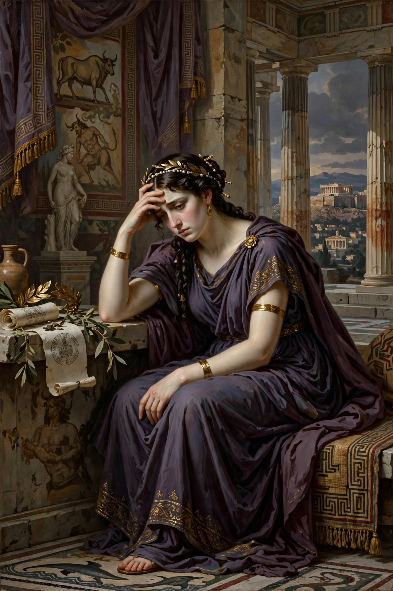

In Greek mythology, Phaedra (Ancient Greek: Φαίδρα, "bright") was a Cretan princess, daughter of King Minos and Pasiphaë, sister of Ariadne, and wife of Theseus, king of Athens. She is best known for her unrequited love for her stepson Hippolytus, which led to the deaths of them both.

| Parents | Minos and Pasiphaë |
|---|---|
| Siblings | Ariadne, Androgeus, the Minotaur (half-brother) |
| Spouse | Theseus |
| Children | Acamas, Demophon |
| Abode | Crete; Athens; Troezen |
Theseus married Phaedra after abandoning her sister Ariadne. When Theseus was absent, Phaedra fell passionately in love with his son Hippolytus, a devoted hunter and worshipper of Artemis who rejected Aphrodite. In Euripides' surviving tragedy Hippolytus (428 BC), Phaedra struggles against her desire, but her nurse reveals it to Hippolytus; shamed, Phaedra hangs herself, leaving a letter falsely accusing Hippolytus of assaulting her. Theseus curses his son, calling on Poseidon, who sends a sea monster that terrifies Hippolytus's horses; the youth is fatally dragged, and Artemis reveals the truth too late.
In Seneca's Phaedra and later versions, Phaedra propositions Hippolytus directly and accuses him after rejection. The story became a byword for forbidden passion and false accusation.
Phaedra's story was retold by Ovid's Heroides, Seneca, and most famously by Jean Racine in Phèdre (1677), considered a pinnacle of French classical tragedy. Modern treatments include plays by Eugene O'Neill (Desire Under the Elms, loosely), Sarah Kane's Phaedra's Love, and operas by Rameau (Hippolyte et Aricie) and Britten (Phaedra).
See also: Theseus · Hippolytus (mythology) · Ariadne · Minos